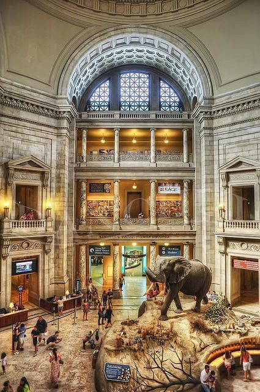

Collections & Resources
Our collections cover several centuries of our community's history. Here are the main parts.
Historical Artefacts

Tools, household items, clothes and personal belongings that show daily life in the region long ago.
Art Collection
Paintings, sculptures and other artworks by local artists, in both traditional and modern styles.
Photography Archive
Thousands of old photographs showing how our towns, people and landmarks have changed.
Historical Documents

Letters, maps, newspapers and official records kept for research and for the public to read.
Collection Overview
| Collection | Approx. Items | Access |
|---|---|---|
| Historical Artefacts | 3,200 | On display / by appointment |
| Art Collection | 850 | On display |
| Photography Archive | 12,000 | Digitised online |
| Historical Documents | 4,500 | Reading room / by appointment |
You can see many of these items online in our digital resources section, or visit in person with help from our research team.